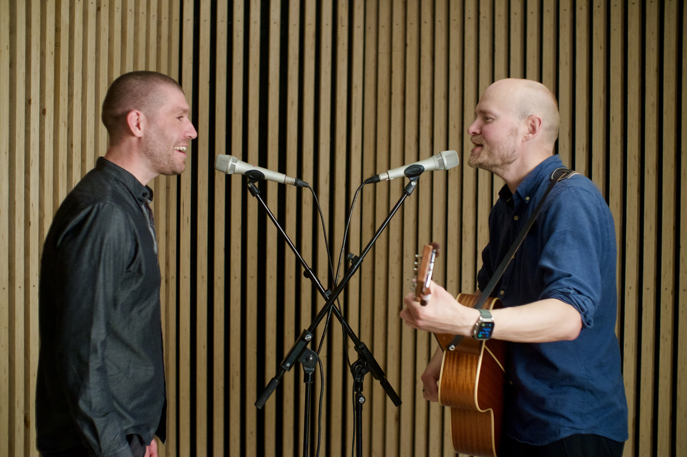
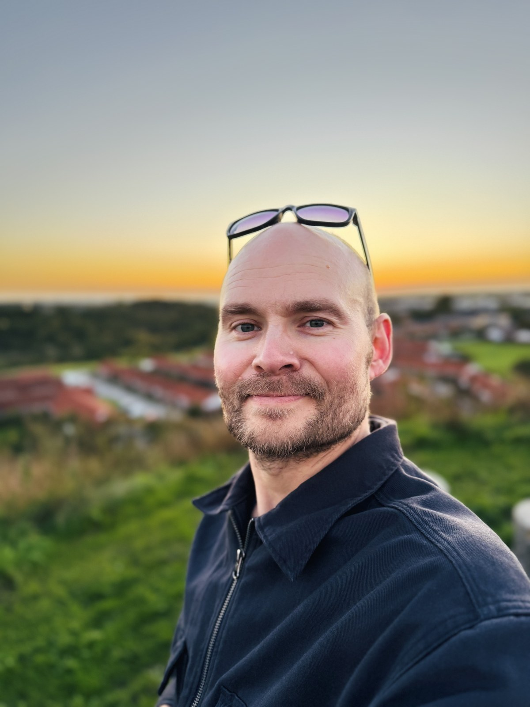

Flow & GreenA curious mind in Aarhus, Denmark
Lasse
Wingreen.
Product Owner. Singer & guitarist.
I like understanding people and making things work.

Often making something.
A bit about me
Open to new Product Owner opportunities
01 / A bit about me
I like figuring out how things work. And how they could work better.
I'm a Product Owner with a background in customer support, SaaS implementation and digital design. Listening to people has always been the starting point, whether I'm helping someone use software or working through a specification with developers.
I spent close to nine years at iPaper, moving from support into implementation and then product ownership. I'm now looking for my next product challenge—and making room to explore ideas of my own.
02 / Product work
Recent work at iPaper · 2023–2026From user needs
to useful specifications.
My product work connects a practical understanding of customers with the details developers need to move forward.
01Checkout & product viewE-commerce / Product specifications
At iPaper, I specified the full project to improve the e-commerce checkout experience and product view, discussing the requirements with developers throughout.
My background in implementation helped me see how those product decisions fitted into a customer's wider setup.
02Accessibility across productsFlipbook & Horizon / Accessibility
I worked on a full accessibility suite for Flipbook and specified an accessibility suite for Horizon. Making functionality understandable and usable was a recurring focus.
The work involved turning broad needs into concrete issues and discussing the details with developers.
03Defining a new productHorizon / Requirements & collaboration
For Horizon, a new addition to iPaper's products, I specified the energy-rating system and numerous other product issues.
I worked closely with developers and took part in regular Scrum ceremonies as the product developed.
03 / Outside work
The things I keep coming back toAway from the screen.
The ride is part
of the reward.
Gravel biking, tinkering with the bike, and heading out to see where a route takes me.
A run clears
a little space.
Long-distance running gives me time outdoors and a different way to work through a thought.
And at the centre of it all: family, home, and the next thing to build.